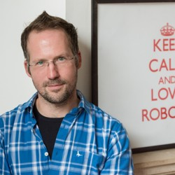

The 5th International Workshop on Active Inference wants to bring together researchers on active
inference as well as related research fields in order to discuss current trends, novel results and
real-world applications. We have an interest in exploring the extent to which active inference can be
used in modern machine learning settings, such as in hybrid setups combining it with deep learning, as
well as to unify the latest psychological and neurological insights, and to determine how it can best be
used to understand action, optimization and decision making.
Programme
The workshop will take place September 9-11th. The full workshop programme will be announced later.
Invited Speakers
Prof. Karl Friston
Wellcome Centre for Human Neuroimaging. University College London.

Prof. Ingmar Posner
Oxford Robotics Institute, Oxford University.
Dr. Emma Holmes
Department of Speech Hearing and Phonetic Sciences. University College London.
Prof. Chris Buckley
Department of Informatics. University of Sussex.
Prof. Rafal Bogacz
MRC Brain Network Dynamics Unit at the University of Oxford.
Call for papers
Papers on all subjects and applications of active inference and related research areas are welcome. The
workshop's focus is on the technical implementation of the ideas. Consequently, topics of interest
include (but are not limited to):
- Active inference, theory and applications
- Predictive coding
- Hierarchical generative models
- Computational neuroscience
- Cognitive robotics
- Intelligent systems
- Neuroeconomics
- Cognitive science
- Decision making
- ...
Important dates
Submission Deadline (Full Paper / Extended Abstract): May 31st, 2024 June 7, 2024
Acceptance Notification: July 14, 2024
Camera Ready Submission Deadline: September 2, 2024
Registration deadline: September 2, 2024
Workshop Date: September 9-11, 2024
Paper submissions
We welcome submissions of papers with up to 12 printed pages (excluding references) in LNCS format (click here for details). Submissions will be evaluated according to their
originality and relevance to the workshop, and should have an abstract of maximum 250 words.
Contributions should
be in PDF format and submitted via OpenReview (click here).
All submitted papers will undergo a rigorous double-blind peer review process, and be selected
based on originality, quality, soundness, and relevance. Submitted papers need to be anonymized with the
best of efforts. It is allowed to have a (non-anonymous) online pre-print. Accepted papers will be
published in the proceedings in the Springer CCIS series.
Extended abstract submissions
We also welcome submissions of extended abstracts with up to 2 printed pages (excluding references and
figures) in
LNCS format (click here for details). These can cover the material of a journal paper
published by the author in the past 12 months, or can be an abstract of late breaking results.
Contributions should be in PDF format and submitted via OpenReview (click here). Extended
abstracts will not be published in the proceedings, but can be accepted as presentations or as posters
to the workshop.
Registration
Registration details will be announced later.
Venue
The workshop will take place at Corpus Christi College, in Oxford, UK.
Travel information
Most travel tickets to Oxford, whether it be for buses or trains, can be conveniently purchased online
through Trainline.
Note that there are ticket options for flexible travelling.
If you're arriving in London by train at London St Pancras International Station, you can transfer to
Oxford by train with typically
one or two changes along the way. Tickets for these journeys can be booked via Trainline. Direct trains to Oxford depart
from London
Paddington and Marylebone Stations, both of which are easily accessible using the London Underground
(the metro/subway system) where you
can simply use contactless bank cards as tickets.
For a direct bus service from London to Oxford, you can opt for the Oxford Tube, which runs 24/7.
Despite the name, it is a coach service, not to be confused with London's subway system, which is also
known as the Tube.
The journey by bus usually takes around 2 hours and departs from various locations, including Victoria
Coach Station.
If you're flying into London via Heathrow Airport, a direct bus to Oxford is a swift option, taking
approximately 1.5 hours with services
like The Airline. If you prefer to
travel by train, which may take longer,
you'll need to journey into central London first before catching a train to Oxford. Trainline can provide you with the
necessary travel routes and ticketing information.
You can also reach Oxford by bus from other London airports or from cities across the UK via services
such as National Express.
For travelling within Oxford, since it's a beautiful and small city that is cycling-friendly, you may
walk, rent a bicycle, or use an e-scooter.
Visa for United Kingdom
Please check the UK Embassy or Consulate in your own country to check if you need a visa to come to
the United Kingdom. Contact us in time if you need an invitation letter.
Organization
IWAI 2024 is made possible thanks to the following people.
Organizers
General Chair: Tim Verbelen
Local Organization Chair: Riddhi Jain Pitliya
Technical Program Chairs: Martijn Wisse, Ivilin Peev Stoianov
Communication Chair: Pablo Lanillos
Organization committee
Christopher Buckley, University of Sussex, United Kingdom
Daniela Cialfi, Institute of Complex Systems (CNR); La Sapienza University of Rome, Italy
Pablo Lanillos, Donders Institute for Brain, Cognition and Behaviour, Netherlands
Riddhi Jain Pitliya, Oxford University, United Kingdom
Noor Sajid, University College London, United Kingdom
Hideaki Shimazaki, Kyoto University, Japan
Ivilin Peev Stoianov, Institute of Cognitive Sciences and Technologies (ISTC), National Research Council
(CNR), Italy
Tim Verbelen, VERSES, USA
Martijn Wisse, Delft University of Technology, Netherlands